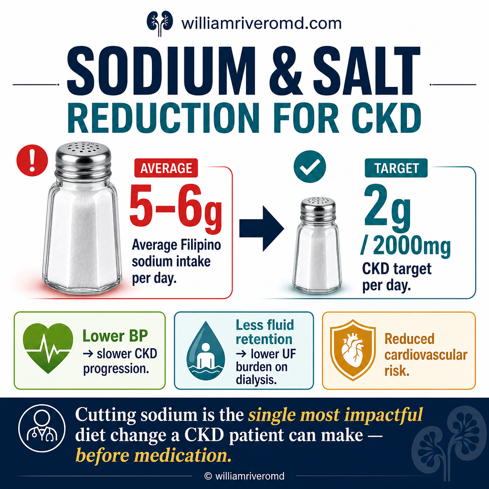

The single most cost-effective intervention for slowing CKD. Ang pinakamabisa at pinakamurang paraan upang pabagalin ang CKD. Ang labing epektibo ug labing barato nga paagi aron mahinay ang CKD. Ing pekamabisa at pekamurang paralan ban pabagalan ing CKD.
![Sodium (Salt) Reduction for CKD — Protect Your Kidneys, Protect Your Heart. Why lower sodium: lowers blood pressure, reduces fluid retention, slows CKD progression, protects your heart. How much: 2,000 mg sodium per day (about 1 teaspoon of salt) for most people with CKD; read labels — 5% DV is low, 20% DV is high. Where sodium hides: processed foods, condiments and sauces, breads and snack foods, restaurant and fast foods, soups and broths — even foods that don't taste salty can be high in sodium. Six practical strategies: choose fresh foods, read labels carefully, flavor your food the healthy way (garlic/onions/ginger/calamansi/herbs), avoid the salt shaker, rinse canned foods, plan ahead. Small changes every day make a big difference — lower sodium, better kidneys, better life](../images/sodium-salt-reduction-overview.webp)
An overview poster on cutting salt for kidney health, explaining why lower sodium helps, how much to aim for each day, where hidden sodium tends to hide in everyday foods, and six practical strategies for eating with less salt.
Of all the things a CKD patient can change about their diet, sodium reduction is the one with the strongest evidence and the largest measurable benefit — and the one Filipinos have the most room to improve on. Sa lahat ng pwedeng baguhin ng pasyenteng may CKD sa kanyang pagkain, ang pagbawas ng sodium ang may pinakamatibay na ebidensiya at pinakamalaking benepisyo — at kung saan tayong mga Pilipino ay may pinakamalaking puwang upang umunlad. Sa tanan nga mausab sa pasyente nga adunay CKD sa iyang pagkaon, ang pagpaminus sa sodium ang adunay labing lig-on nga ebidensya ug labing dako nga benepisyo — ug kung asa kita nga mga Pilipino ang adunay labing dako nga luna aron molambo. King eganaganang malyaring pabayuwan ning pasyenting atin CKD king pamangan na, ing pamamawas ning sodium ing atin pekamatibe a ebidensya at pekamalakas a benepisyo — at nukarin tamung Pilipino ing atin pekamalakas a luna ban manyusug.
Every 100 mmol (≈2.3 g) reduction in daily sodium intake lowers systolic blood pressure by 5 mmHg and proteinuria by ~25% in CKD patients on RAAS blockade. It amplifies the effect of every kidney-protective drug we prescribe. Sa bawat 100 mmol (≈2.3 g) na bawas sa pang-araw-araw na sodium bumababa ang systolic blood pressure ng 5 mmHg at ang proteinuria ng ~25% sa mga pasyenteng may CKD na umiinom ng ACEi o ARB. Ito ang nagpapalakas ng epekto ng bawat gamot na nagpoprotekta sa bato. Sa matag 100 mmol (≈2.3 g) nga pagpaminus sa adlaw-adlaw nga sodium moubos ang systolic blood pressure og 5 mmHg ug ang proteinuria og ~25% sa mga pasyente nga adunay CKD nga nag-inom og ACEi o ARB. Kini ang nagpalig-on sa epekto sa matag tambal nga nagpanalipod sa kidney. King kabang 100 mmol (≈2.3 g) a bawas king aldo-aldong sodium bumababa ing systolic blood pressure ning 5 mmHg at ing proteinuria ning ~25% kareng pasyenting atin CKD a maginum ning ACEi o ARB. Iti ing magpalakas king epektu ning kabang gamut a magpoprotekta king bato.
Conversely, each 1 g/day excess of sodium above target is associated with a 17% higher cardiovascular event rate in CKD — independent of blood pressure (PURE study, NEJM 2014). Kabaligtaran naman, sa bawat 1 g/araw na sobra sa target ng sodium, tumataas nang 17% ang panganib ng atake sa puso o stroke sa CKD — kahit kontrolado pa ang blood pressure (PURE study, NEJM 2014). Sa laing bahin, sa matag 1 g/adlaw nga sobra sa target sa sodium, motaas og 17% ang risgo sa atake sa kasingkasing o stroke sa CKD — bisan kontrolado pa ang blood pressure (PURE study, NEJM 2014). Kabaliktarang, king kabang 1 g/aldo a sobra king target ning sodium, tumataas nang 17% ing peligru ning atake king pusu o stroke king CKD — maski kontrolado pa ing blood pressure (PURE study, NEJM 2014).
2026 Research Update — Nature Reviews Nephrology 2026 na Update sa Pananaliksik — Nature Reviews Nephrology 2026 nga Update sa Panukiduki — Nature Reviews Nephrology 2026 a Update king Pananaliksik — Nature Reviews Nephrology
A 2026 comprehensive review by Murray et al. in Nature Reviews Nephrology confirms that disruption of sodium homeostasis sits at the center of CKD development and progression. Excess dietary sodium overwhelms the kidney's regulatory mechanisms, activating the renin–angiotensin–aldosterone system (RAAS), promoting tissue sodium accumulation, and amplifying every pathway that drives kidney injury, hypertension, and cardiovascular disease — even before outright fluid overload is clinically evident. Isang komprehensibong rebyu ni Murray et al. (2026) sa Nature Reviews Nephrology ang nagpapatunay na ang pagkagambala ng sodium homeostasis ay nasa sentro ng pagbuo at pagsulong ng CKD. Ang sobrang sodium sa pagkain ay nagpapasapaw sa kakayahan ng bato na mag-regulate, nagpupukaw ng RAAS, nagtataguyod ng pagtitipon ng sodium sa mga tisyu, at nagpapalaki sa bawat prosesong nagtataguyod ng pinsala sa bato, hypertension, at sakit sa puso. Usa ka komprehensibong rebyu ni Murray et al. (2026) sa Nature Reviews Nephrology ang nagpamatud nga ang pagkaguba sa sodium homeostasis naa sa sentro sa pagpalambo ug pag-uswag sa CKD. Ang sobrang sodium sa pagkaon nagbaha sa kakayahan sa kidney sa pagregula, nagpukaw sa RAAS, nagtagana sa sodium sa mga tisyu, ug nagpadako sa matag proseso nga nagpalabi sa kadaot sa kidney, hypertension, ug sakit sa kasingkasing. Isa a komprehensibong rebyu ni Murray et al. (2026) king Nature Reviews Nephrology ing magpatunay a ing pagkagambala ning sodium homeostasis atyu king sentru ning pamipanulu at pamipalapaw ning CKD. Ing sobrang sodium king pamangan magpasapawan king kakayahan ning bato ban mag-regulate, magpukaw king RAAS, magtanggap ning sodium king mga tisyu, at magpalaki king kabang prosesong magtataguyod king pansira king bato, hypertension, at sakit king pusu.
Blood pressurePresyon ng dugoPresyur sa dugoPresyon ning daya
The kidneys are the body's primary sodium regulator. When that regulation is impaired, every extra gram of sodium directly raises blood volume and arterial pressure — which then accelerates the kidney damage further. Ang mga bato ang pangunahing nagre-regulate ng sodium sa katawan. Kapag sira na ang regulasyong ito, ang bawat dagdag na gramo ng sodium ay direktang nagtataas ng dami ng dugo at ng presyon — na lalo pang nagpapabilis sa pagkasira ng bato. Ang mga kidney mao ang nag-unang nagregula sa sodium sa lawas. Kung daot na kini nga regulasyon, ang matag dugang nga gramo sa sodium direkta nga magpataas sa gidaghanon sa dugo ug sa presyur — nga magpadali pa sa pagkadaot sa kidney. Ding bato ing pangunang magre-regulate king sodium king katawan. Nung sira na ing regulasyong iti, ing kabang dagdag a gramong sodium direktang magtataas king dami ning daya at king presyon — a lalo pang magpapabilis king pamigsira ning bato.
ProteinuriaProteinuriaProteinuriaProteinuria
High sodium intake doubles the protein leak across damaged glomeruli, even when blood pressure is "controlled" on paper. ACE inhibitors and ARBs lose much of their renoprotection in the setting of high salt. Ang mataas na sodium ay nagdo-doble sa pagtagas ng protina sa nasirang mga salaan ng bato, kahit "kontrolado" na sa papel ang presyon. Nawawala ang malaking bahagi ng proteksiyon ng ACEi at ARB sa kapaligirang puno ng asin. Ang taas nga sodium magdoble sa pagtulo sa protina sa nadaot nga mga salaan sa kidney, bisan "kontrolado" na sa papel ang presyur. Mawala ang dako nga bahin sa proteksyon sa ACEi ug ARB sa palibot nga puno sa asin. Ing matas a sodium magdo-doble king pamagdumpe ning protina king mesirang mga salaan ning bato, maski "kontrolado" na king papel ing presyon. Mewara ing malakas a bayu ning proteksyon ning ACEi at ARB king palibutan a punung asin.
Fluid retentionPamamanas / pagtatabi ng tubigPanghupong / pagtigom sa tubigPamagmuya / pamagtabi ning danum
Sodium pulls water with it. In CKD Stage 3+, this means edema, ascites, pulmonary congestion, and inter-dialytic weight gain. Limiting sodium is more effective than limiting fluid alone. Hinihila ng sodium ang tubig kasama nito. Sa CKD Stage 3 pataas, nagdudulot ito ng pamamanas, tubig sa tiyan, baradong baga, at pagtaas ng timbang sa pagitan ng dialysis. Mas epektibo ang paglilimita sa sodium kaysa sa paglilimita lamang sa tubig. Ang sodium magbira sa tubig uban kaniya. Sa CKD Stage 3 pataas, kini magdala og panghupong, tubig sa tiyan, baradong baga, ug pagtaas sa timbang tali sa dialysis. Mas epektibo ang paglimita sa sodium kaysa sa paglimita lang sa tubig. Itali ning sodium ing danum kayabe na. King CKD Stage 3 paitas, magbubunga ya ning pamagmuya, danum king atyan, baradong baga, at pamagtaas ning timbang king pilatan ning dialysis. Mas epektibo ing pamamilimita king sodium kesa king pamamilimita mu king danum.
Cardiovascular eventsAtake sa puso at strokeAtake sa kasingkasing ug strokeAtake king pusu at stroke
Heart attack and stroke kill more CKD patients than kidney failure itself does. Sodium reduction lowers the risk of both, in addition to its kidney effects. The benefit is dose-dependent. Mas marami ang namamatay sa atake sa puso at stroke kaysa sa kidney failure mismo sa mga pasyenteng may CKD. Ang pagbabawas ng sodium ay nagpapababa sa parehong panganib, dagdag pa sa epekto nito sa bato. Mas malaking bawas, mas malaking benepisyo. Mas daghan ang namatay sa atake sa kasingkasing ug stroke kaysa sa kidney failure mismo sa mga pasyente nga adunay CKD. Ang pagpaminus sa sodium magpaubos sa duha ka risgo, dugang pa sa epekto niini sa kidney. Mas dako ang pagpaminus, mas dako ang benepisyo. Mas dakal ing mate king atake king pusu at stroke kesa king kidney failure mismu kareng pasyenting atin CKD. Ing pamamawas ning sodium magpababa king parehung peligru, dagdag pa king epektu na king bato. Mas malakas a bawas, mas malakas a benepisyo.